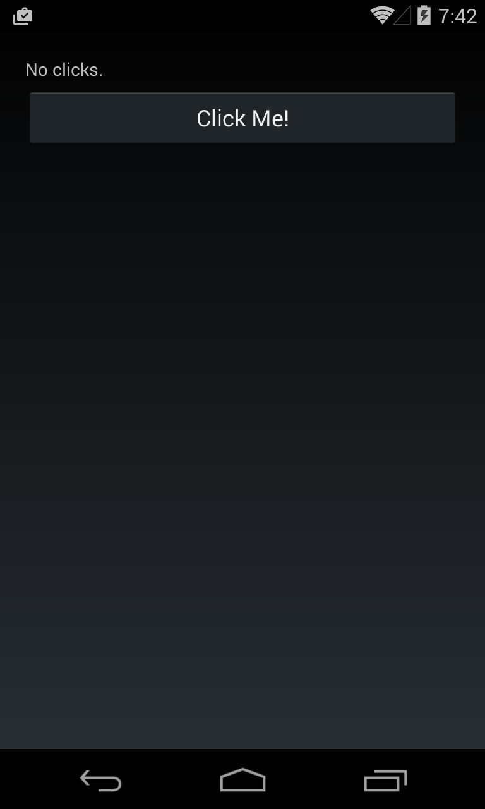
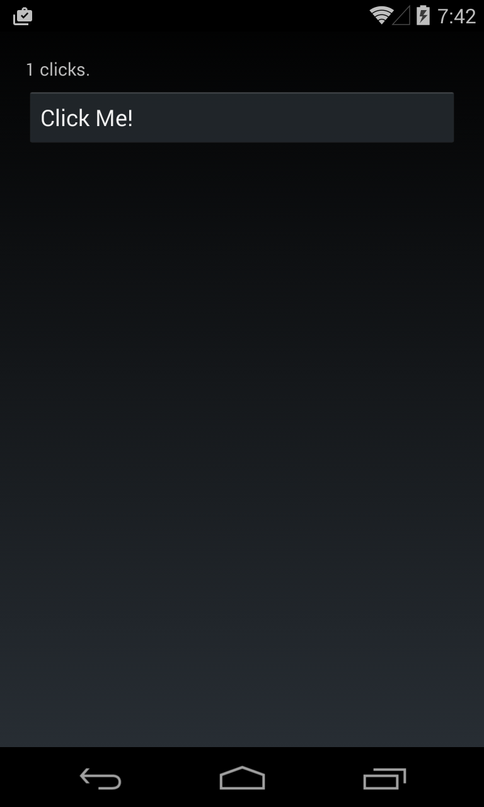
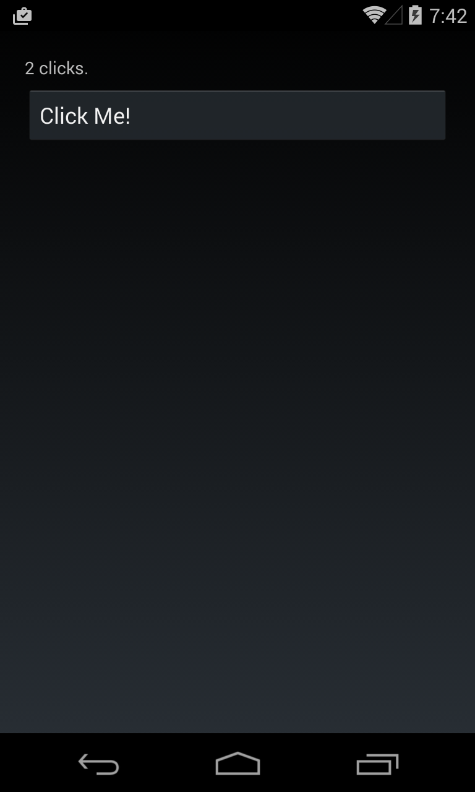

Duration
30 minutes
Homework goals
Here you will write a Xamarin.Forms program to count the number of clicks to a button. Sample output from the completed application looks like this, notice the label changing it's value as we click the button.
|  |  |  |
You will need to perform the following steps:
- Add a
Labeland aButtoninto the UI. - Use a
StackLayoutto organize the content with theLabelabove theButton. - Add an event handler to the
Clickedevent on the button. - Each time the event handler is called, increment a counter field (integer) and change the
Textof theLabelto indicate how many times the button has been clicked.
Hint: You will want to store the label into a field, and make sure to organize your code so you use an
App class - just like we did in the lecture.
Solution
The provided Homework Resources/Completed folder contains a completed version of the program you can use to check your work. Your solution does not need to look exactly like this code, however the output should be correct as shown above.